Куттенберг та околиці — ключові локації гри Kingdom Come: Deliverance II. Досліджуйте середньовічні міста, замки, табори та мальовничі села, де відбуваються основні події гри.
Карта локацій Kingdom Come: Deliverance II
Карта локації Куттенберг

Натисніть на карту для детального перегляду Куттенберга
Інші локації світу
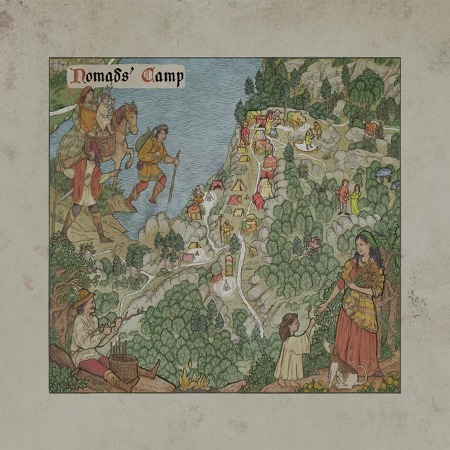
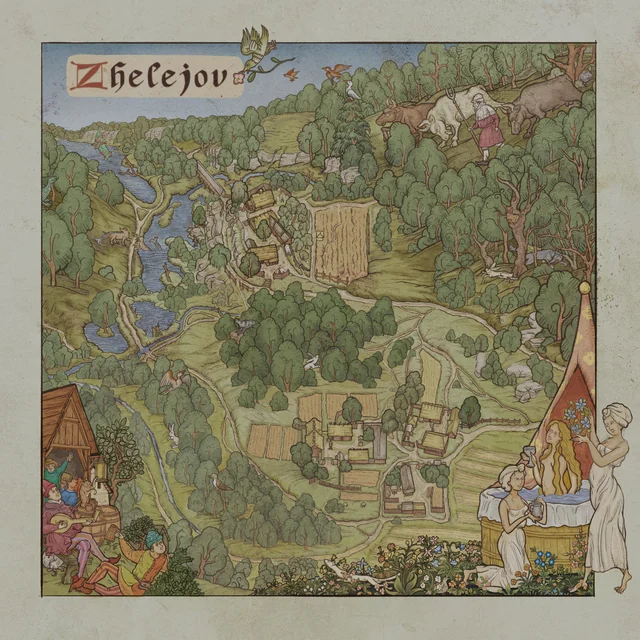
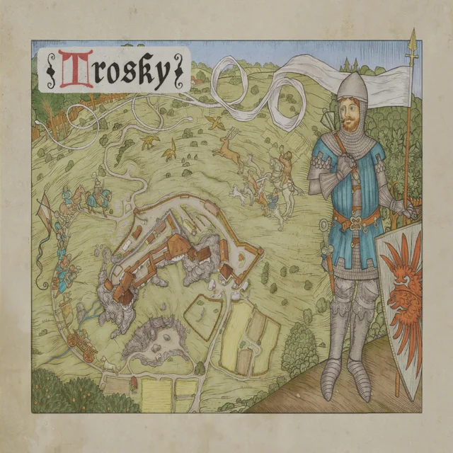
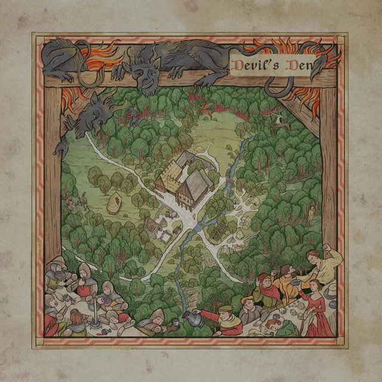
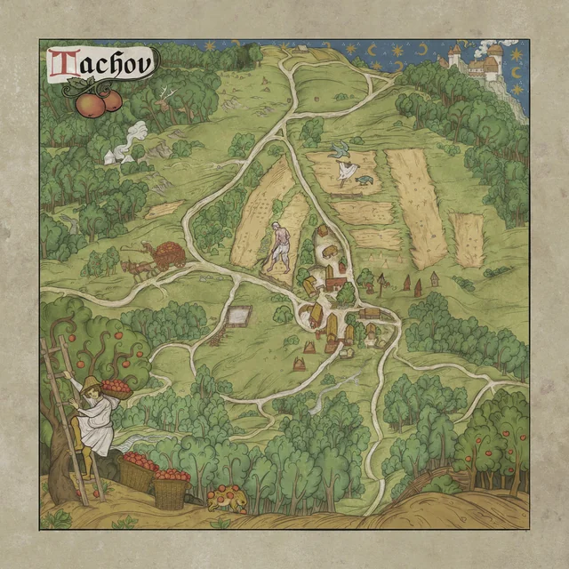
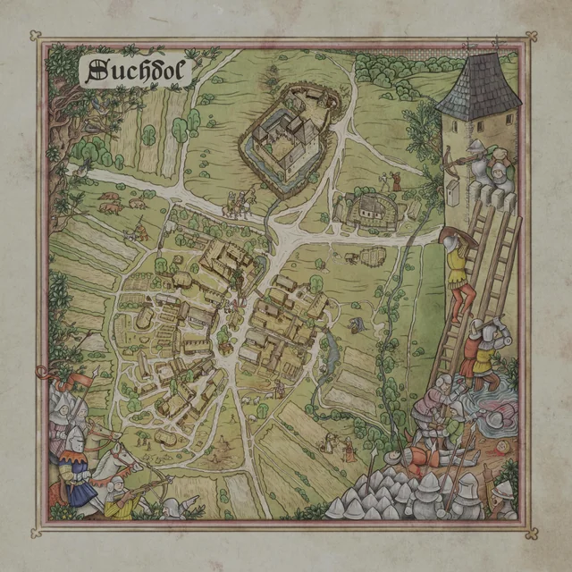
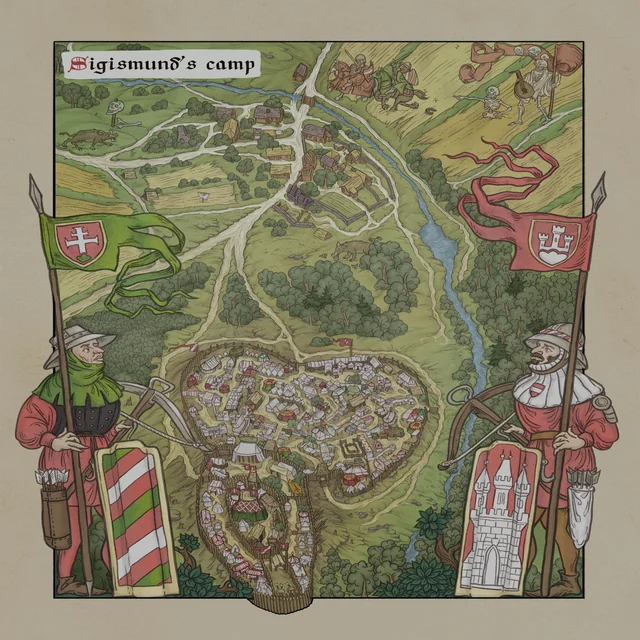
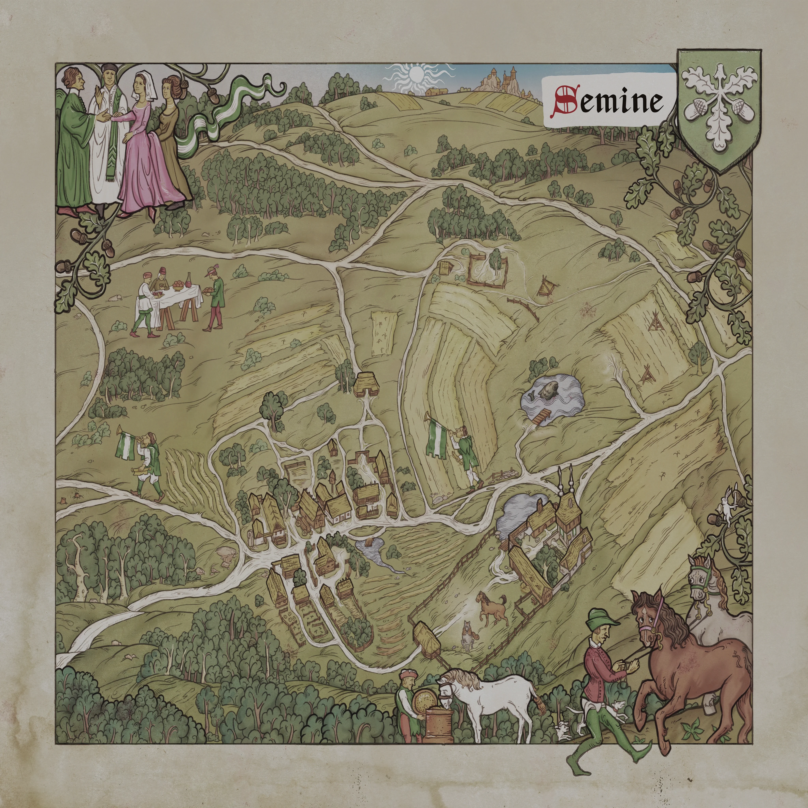

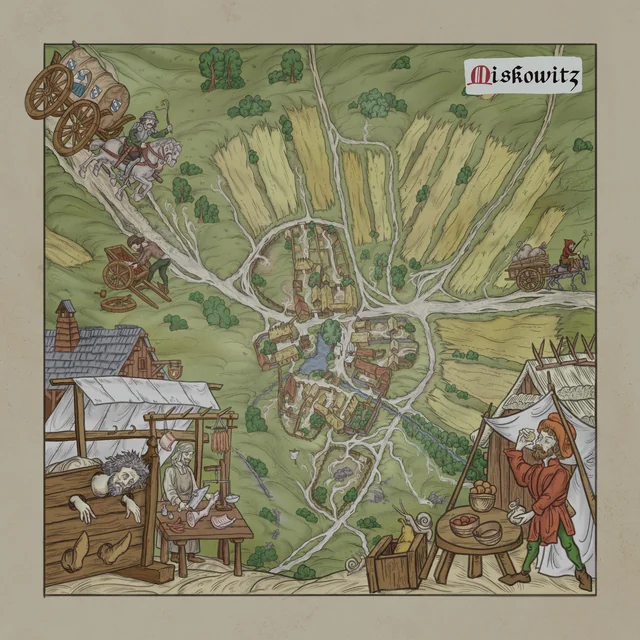
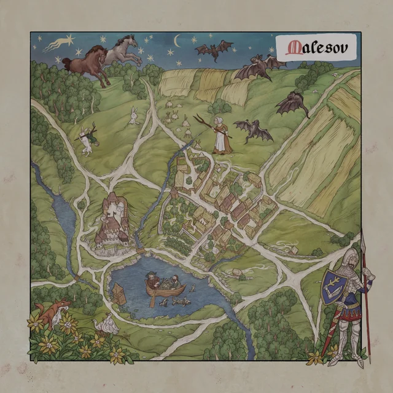
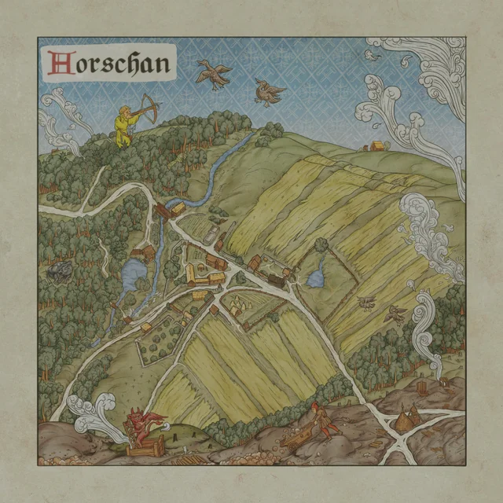
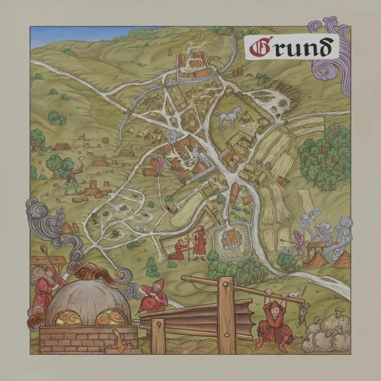
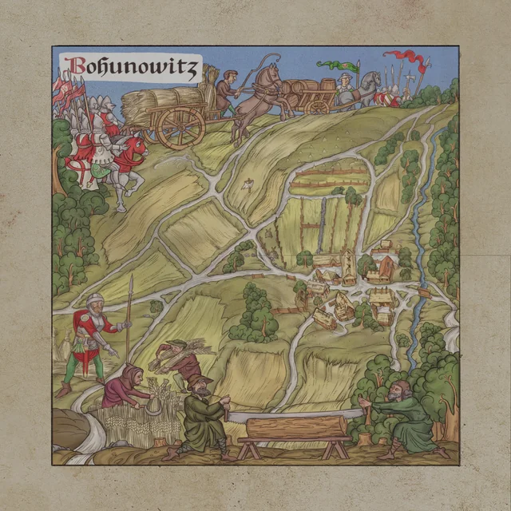